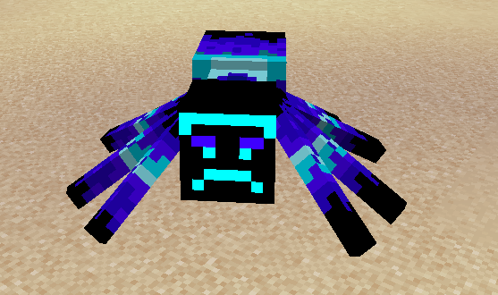
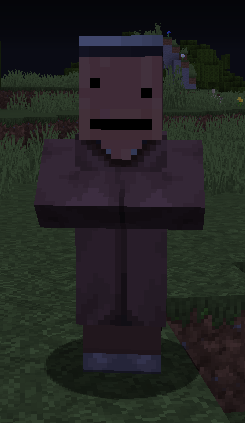
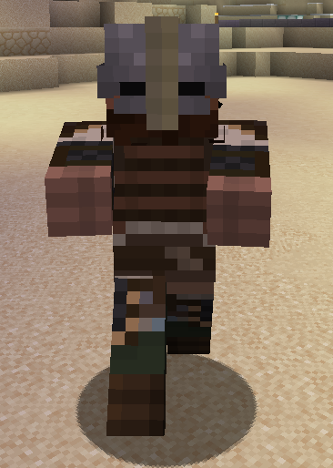
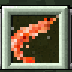

CrispyDicks Resource Pack
THIS PAGE IS OUTDATED. IT WILL BE UPDATED SHORTLY.
Origin
The CrispyDicks Resource Pack, more casually known as Crispy Resources, came to be on April 1, 2019. The pack was compiled by Markaroli with texture contributions from darkbladelink. The pack also features a variety of custom voice acting from our friends Zonemann and Crispy himself. Also included is some of the creative commentary of MrArcane. While CrispyDicks was originally developed as part of the 2019 CrispyMiners April Fool's Day event, it has stuck around as an optional download to get the full Crispy experience.
The pack is always a work in progress and will continue to be updated over time.
Download
The CrispyDicks Resource Pack is conveniently available for download on both MediaFire and Dropbox. If there are issues with either of the below links, please let a staff member know on discord.
MediaFire link: https://www.mediafire.com/file/1k4bp1tk1j3i1aw/CrispyDicks.zip/file
Dropbox link: https://www.dropbox.com/s/pih6ruaigw3dfbn/CrispyResources.zip?dl=0
Textures
Our resource pack changes a variety of textures in the game. Below are all of the changes textures with pictures.
Spider: The spider texture is replaced with the texture of the Zonespider, based on the skin of Zonemann. For more info on the origins of the Zonespider, see the "The Alien Invasion" page in the "Lore" category of the guides.

Villager: The nitwit villager texture is replaced with the texture of Nubby. Nubby is a character in a Minecraft adventure map that some of the Crispy bois played back in the day!

Zombie: The zombie texture is replaced with the texture of Crispy Henrikksen himself.

Cooked cod: The cooked cod item texture is replaced with a shrimp texture as a reference to Shrimpcrafters.

Paintings: There are a variety of painting changes and modifications. You'll have to check those out in game though! ;)
Sounds
Our resource pack also changes a few in game sounds!
Spider noises: To go along with their changed texture, the spider noises have been replaced with some new spoken lines voiced by Zonemann himself! Fun fact, one of the lines was recorded in a carpark!
Zombies noises: The zombie sounds have been replaced with some custom lines voiced by Crispy Henrikksen himself, with a couple of them even being in Norwegian!
Records: The record "11" has been changed to now be the complete audio of the hit youtube video, MrArcane Plays "AlphaCrafters E1: Getting started" as seen here: